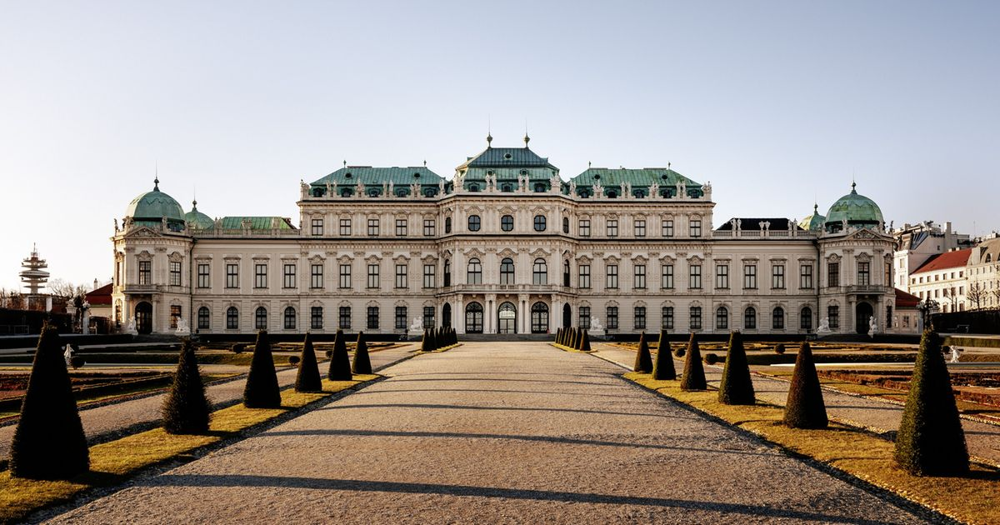
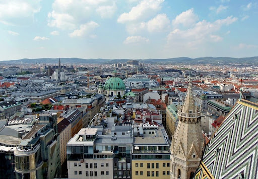

Wiedeń to stolica Austrii. Ludność tego miasta to 1,897mln(2019).Założony około 500 p.n.e., Wiedeń był pierwotnie celtycką osadą. W 15 p.n.e. miasto pełniło funkcję rzymskiego posterunku granicznego (Vindobona) strzegącego Imperium Rzymskiego przed najazdami germańskich plemion z północy. W 1221 roku Wiedeń uzyskał prawa miejskie.
Najciekawsze miejsca do odwiedzenia to Belweder,Prater,Zamek Hofburg i HeldenPplatz.